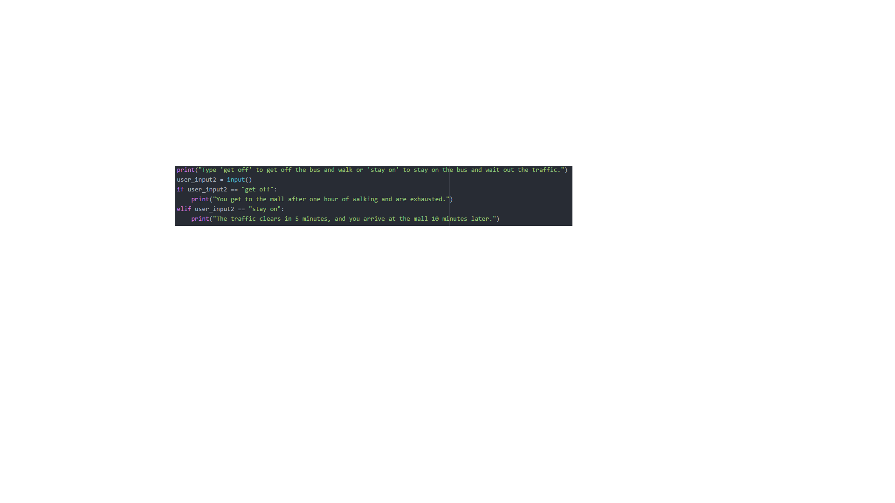
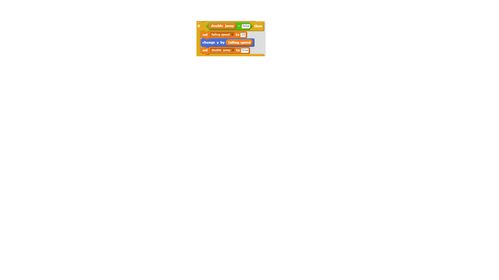
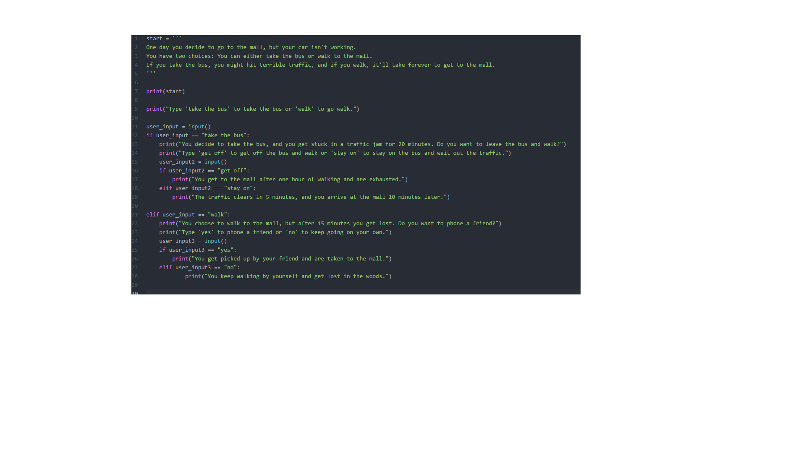
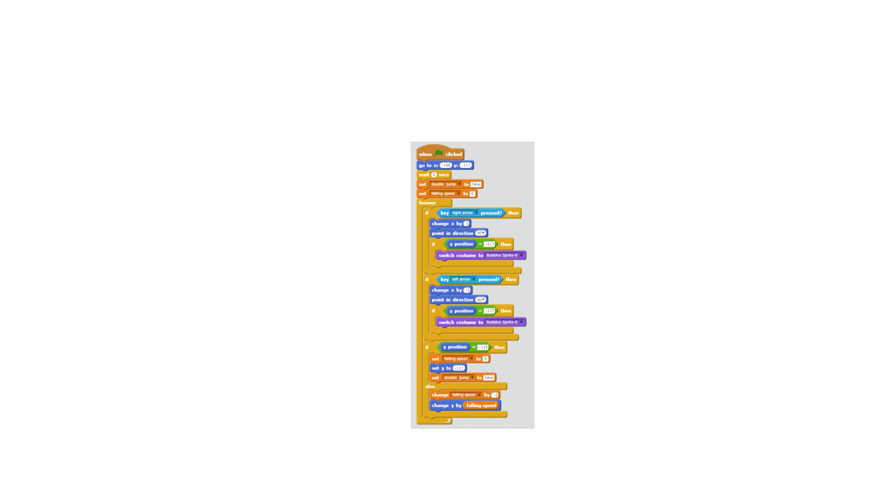
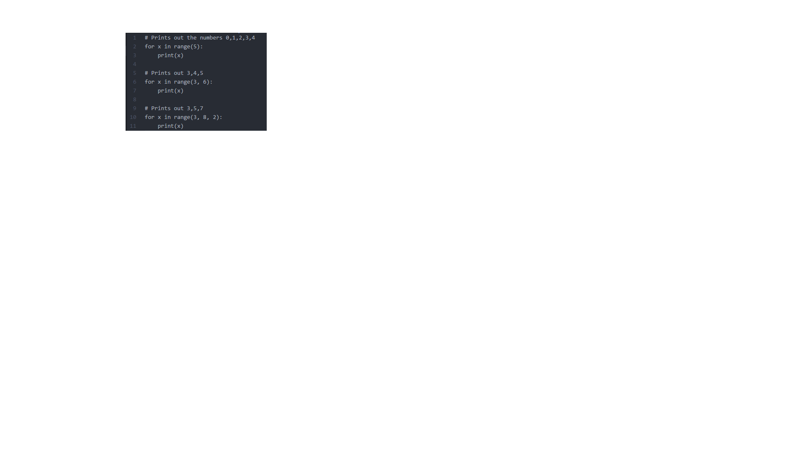

The youngest of four Devine children, I am a Seattleite living just a few blocks away from the Space Needle.
A competitive ballroom dancer for now 10 years, I have won three national titles.
Whenever I'm not dancing, you will likely find me playing piano, cooking with my family, or outside taking photos of my surroundings.
the ocean
unlit candles
hammocks
marble
cityscapes
the smell of new shoes
homemade pie
hand lettering
waking up early
laundry
running late
long hikes
clutter
I'm part Japanese, but you wouldn't be able to tell by my complexion.
Groove Salad
Pinterest
Instagram
Riccardo Cocchi and Yulia Zagoruychencho
Conditional- If a certain statement is true, perform a certain action. If not, perform some other specified action.
analogy: If the light is green, go. If not, stop.

Variable- A placeholder for some value.
analogy: in math, x stands for some unknown value

Function- A process of performing certain commands.
analogy: getting up in the morning and performing certain actions before you leave for the day


Loop- Repeat a certain set of code a certain amount of times.
analogy: repeating laps around a track until the distance is one mile

My idea of robotics didn't really change, even after our discussions in class. I'm excited that robots
can help us in our day-to-day life and help us discover answers to difficult questions. What
makes me nervous is the possibility that robots may one day become independent from humans
and that they may start to become a hindrance to the human race.
When I was working on circuits in my group, we hit a lot of avoidable roadblocks. The problem is that we
didn't have an arduino that came with all of the necessary batteries. Our first few circuit configurations
would've worked, but nothing happened until we received an additional battery. When we were confused
or lost, we asked for help. We also utilized different video tutorials and used those as a
template for our circuit. Next time, I'll make sure that everything is set up properly before
my group dives in to the challenge.
Manuela Veloso and Ayanna Howard are both women who programmed robots to carry out advanced functions.
On the light show challenge, I worked on the pseudo code and some general mechanics on the circuit board, Seble
researched tutorials and communicated with other groups, and Jolie placed items on the board and
wrote the final draft of the code that was uploaded to the arduino. I could've helped Jolie more with
translating my pseudo code into the code that was on the arduino program.
Every arduino sketch has comments, variables, and functions. Functions include pinMode(), digitalWrite(),
setup(), loop(), and delay().
Today I learned how complex circuits can be if not set up properly.
My favorite part of my group's robot's dance is that it rotated when Rihanna sang "round and around and
around and around we go". Also, the noise that we initially programmed our piezo to make was hilarious!
Manuela Veloso and Ayanna Howard both had robots whose outputs were sound and movement.